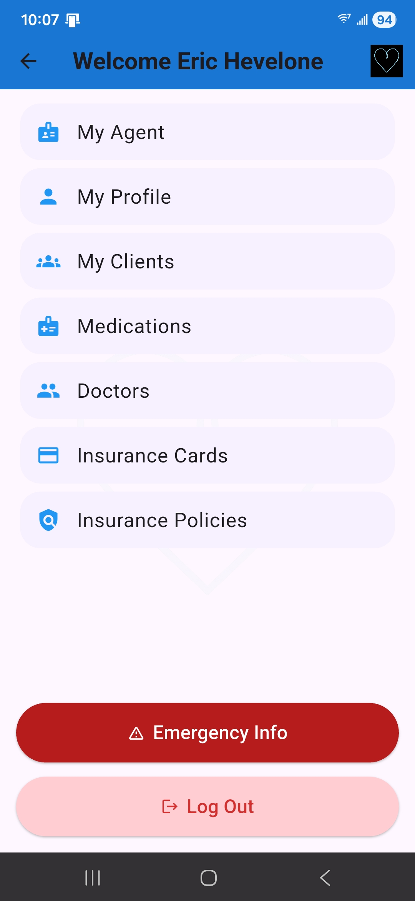

VitaLink™ Agent Quick Start
Learn how agents use VitaLink to improve client retention, stay connected year-round, simplify emergency preparedness, and create stronger household relationships.
1. Create Your Agent Account
Start by creating your VitaLink Agent account. Once active, you’ll gain access to your client dashboard, invite system, notifications, reporting tools, and future agency integrations.
🔐 Secure Agent Access
Your account gives you visibility into your connected clients while keeping all information secure and permission-based.
📊 Client Dashboard
View activations, connected clients, campaign tools, and future retention tracking features from one central dashboard.
2. Invite Your Clients
Invite clients directly into VitaLink and help them activate their secure profile. Clients stay connected to you year-round instead of only hearing from you during enrollment periods.
📩 Send Invitations
Invite clients directly by email through the VitaLink Agent Dashboard.
Clients simply:
• Download VitaLink from the App Store or Google Play
• Enter your unique Agent Code during setup
OR
• Scan your personal Agent QR code for quick connection
Once activated, the client becomes connected to your VitaLink dashboard automatically.
🤝 Stay Connected
Your information remains connected to the client profile, helping improve retention and long-term visibility.
3. What Clients Store Inside VitaLink
Clients can securely organize their important health and insurance information in one place — making it accessible when it matters most.
💊 Medications
Maintain an updated list of prescriptions and medications for emergency access and household organization.
🩺 Doctors & Care Teams
Store doctors, specialists, clinics, and care providers for fast access during emergencies or appointments.
🛡 Insurance Cards
Store Medicare Advantage, Supplement, PDP, dental, vision, and ancillary insurance cards securely.
📄 Insurance Policies
Keep policy information organized and accessible throughout the year.
📞 Emergency Contacts
Emergency contacts can be reached quickly when a major health event occurs.
🔳 Secure QR Access
Each VitaLink profile includes a secure QR system designed for emergency situations.

4. Emergency QR Access
If an emergency happens, first responders or family members can scan the VitaLink QR code to access critical emergency information quickly and securely.
🚑 Faster Access To Information
Medications, conditions, emergency contacts, and insurance details can be accessed immediately when every second matters.
📲 Family Notifications
Emergency contacts receive alerts and access details during critical situations.
5. Why VitaLink Helps Agent Retention
VitaLink helps keep you visible to clients and their families throughout the year — not just during AEP.
🏠 Household Visibility
The more relationships you build within the household, the harder it becomes for another agent to replace you.
📣 Referral Opportunities
Family members and emergency contacts are naturally introduced to you during meaningful moments.
📅 Year-Round Connection
Maintain relevance outside enrollment season through ongoing engagement and visibility.
6. Campaigns & Notifications
VitaLink includes smart notification systems and future campaign tools designed to help agents maintain communication with their client base.
🔔 Smart Notifications
Receive important updates tied to enrollment periods, client activity, and future engagement tools.
📬 Client Follow-Up
Create additional touchpoints beyond policy enrollment and annual reviews.
Frequently Asked Questions
Does the client pay for VitaLink?
Agents can choose to provide VitaLink to clients directly as part of their service experience.
Can agencies manage multiple agents?
Yes. VitaLink includes agency management and administrative visibility tools.
Is client information secure?
VitaLink uses secure systems designed to protect sensitive client information and emergency access workflows.
Can VitaLink work outside Medicare?
Yes. VitaLink can help organize health and insurance information for a wide range of individuals and families.
Start Using VitaLink With Your Clients
Help your clients stay prepared while strengthening long-term retention and household relationships.
Return To Agent Access